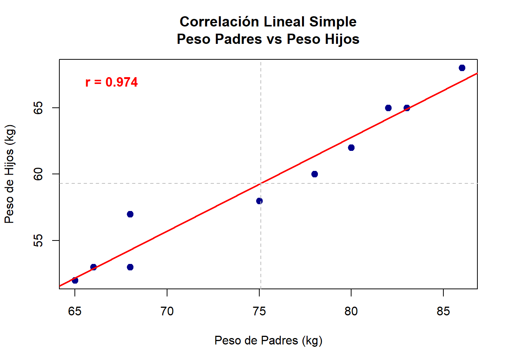
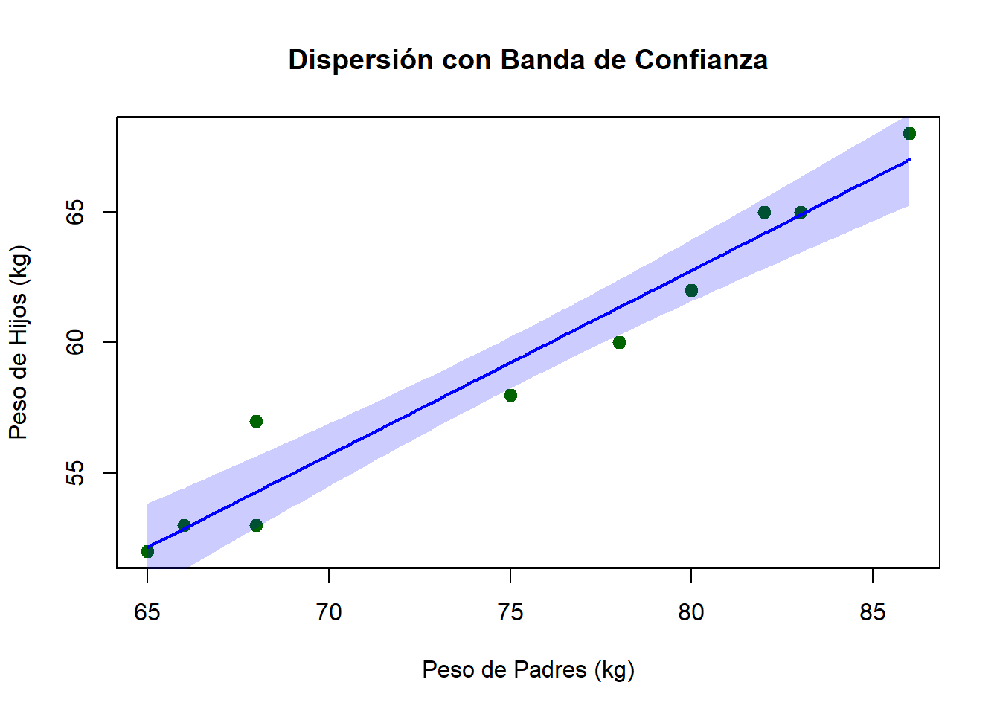

cov(x, y, use = "everything", method = "pearson")Análisis de correlación lineal simple
El análisis de correlación lineal simple permite cuantificar el grado de asociación lineal entre dos variables cuantitativas. En agronomía, este análisis es fundamental para evaluar relaciones como el diámetro y el peso de frutos, o el contenido de materia orgánica y calcio en suelos (López & González, 2018). La correlación no implica causalidad, pero sí proporciona una medida objetiva de la fuerza y dirección de la relación lineal entre dos variables (Moore et al., 2017).
Covarianza
La covarianza mide la tendencia conjunta de dos variables a aumentar o disminuir simultáneamente. Su valor puede ser positivo, negativo o cero, pero su magnitud depende de las unidades de las variables, lo que dificulta la comparación entre estudios.
La covarianza poblacional se define como:
\[\LARGE \operatorname{Cov}(X, Y) = \mathrm{E}[(X - \mu_X)(Y - \mu_Y)] \]
El estimador muestral de la covarianza es:
\[\LARGE \hat{\operatorname{Cov}}(X, Y) = \frac{1}{n-1} \sum_{i=1}^{n} (x_i - \bar{x})(y_i - \bar{y}) \]
Ejemplo paso a paso:
Considérese los siguientes datos de peso de padres (\(X\)) y peso de hijos (\(Y\)) en kilogramos:
\[\begin{array}{cccccccccc} x_i & 78 & 65 & 86 & 68 & 83 & 68 & 75 & 80 & 82 & 66 \\ y_i & 60 & 52 & 68 & 53 & 65 & 57 & 58 & 62 & 65 & 53 \\ \end{array} \]
- Calcular las medias:
\[\LARGE \bar{x} = \frac{78 + 65 + \ldots + 66}{10} = 75.1\]
\[\LARGE \bar{y} = \frac{60 + 52 + \ldots + 53}{10} = 59.3\]
- Calcular las diferencias respecto a la media y sus productos:
\[\LARGE (x_i - \bar{x})(y_i - \bar{y}) (xi−xˉ)(yi−yˉ)\]
Por ejemplo, para el primer par:
\[\Large (78 - 75.1)(60 - 59.3) = 2.9 \times 0.7 = 2.03 \]
Se repite para cada par y se suman los resultados:
\[\LARGE \sum_{i=1}^{10} (x_i - \bar{x})(y_i - \bar{y}) = 386.7 \]
- Calcular la covarianza:
\[\LARGE \hat{\operatorname{Cov}}(X, Y) = \frac{386.7}{10-1} = 42.97 \]
Coeficiente de correlación de Pearson
El coeficiente de correlación de Pearson (\(r\)) es una medida adimensional que cuantifica la fuerza y dirección de la relación lineal entre dos variables. Su valor oscila entre -1 y 1.
Definición poblacional:
\[\huge \rho = \frac{\operatorname{Cov}(X, Y)}{\sigma_X \sigma_Y} \]
Estimador muestral:
\[\huge r = \frac{\sum_{i=1}^{n} (x_i - \bar{x})(y_i - \bar{y})} {\sqrt{\sum_{i=1}^{n} (x_i - \bar{x})^2} \sqrt{\sum_{i=1}^{n} (y_i - \bar{y})^2}}\]
Cálculo paso a paso:
- Calcular las sumas de cuadrados:
\[\huge S_{xx} = \sum_{i=1}^{n} (x_i - \bar{x})^2 \]
\[\huge S_{yy} = \sum_{i=1}^{n} (y_i - \bar{y})^2\]
- Calcular el numerador y denominador:
\[\LARGE \text{Numerador} = \sum_{i=1}^{n} (x_i - \bar{x})(y_i - \bar{y}) = 386.7\]
\[\huge \text{Denominador} = \sqrt{S_{xx} \cdot S_{yy}} \]
Supóngase que \(S_{xx} = 546.9\) y \(S_{yy} = 288.1\):
\[\Large \text{Denominador} = \sqrt{546.9 \times 288.1} = \sqrt{157,561.89} = 396.9 \]
- Calcular r:
\[\huge r = \frac{386.7}{396.9} = 0.974\]
Interpretación: Un valor de \(r = 0.974\) indica una asociación lineal positiva muy fuerte entre las variables.
Prueba de significancia para el coeficiente de correlación
Para determinar si la correlación observada es estadísticamente significativa, se utiliza la siguiente hipótesis:
\(H_0: \rho = 0\) (no hay correlación lineal)
\(H_1: \rho \neq =0\) (existe correlación lineal)
El estadístico de prueba es:
\[\huge t = \frac{r \sqrt{n-2}}{\sqrt{1 - r^2}}\]
Este estadístico sigue una distribución t de Student con \(n-2\) grados de libertad.
Ejemplo:
Con \(r = 0.974\) y \(n = 10\):
\[\LARGE\begin{array} \\t = \frac{0.974 \sqrt{10-2}}{\sqrt{1 - 0.974^2}} \\ =\frac{0.974 \times 2.828}{\sqrt{1 - 0.949}} \\ = \frac{2.754}{\sqrt{0.051}} \\ =\frac{2.754}{0.226} \\ = 12.19 \end{array}\]
Se compara el valor calculado con el valor crítico de t para \(n-2 = 8\) grados de libertad y el nivel de significancia deseado (por ejemplo, \(\alpha = 0.05\). Si \(|t| > t_{crítico}\), se rechaza \(H_0\).
Uso de funciones en R
Función cov()
La función cov() permite calcular la covarianza muestral entre dos vectores numéricos. Su sintaxis general es:
Argumentos principales:
Los argumentos principales son los siguientes:
x, y: vectores numéricos que contienen los datos de las dos variables a comparar.
use: especifica el método para el tratamiento de valores faltantes. Por ejemplo,
"everything"utiliza todos los datos, mientras que"complete.obs"excluye las observaciones con valores faltantes.method: indica el tipo de covarianza a calcular. El valor por defecto es
"pearson", que corresponde a la covarianza clásica.
Función cor()
La función cor() se utiliza para calcular el coeficiente de correlación entre dos vectores numéricos. La sintaxis básica es:
cor(x, y, method = "pearson")Argumentos principales:
x, y: vectores numéricos que representan las variables de interés.
method: define el tipo de correlación a calcular. Puede tomar los valores
"pearson"(por defecto, para correlación lineal),"spearman"(para correlación de rangos) o"kendall"(para correlación de concordancia).
Función cor.test()
La función cor.test() realiza una prueba de hipótesis para el coeficiente de correlación entre dos variables. Su sintaxis general es:
cor.test(x, y, alternative = "two.sided", method = "pearson", conf.level = 0.95)Argumentos principales:
x, y: vectores numéricos que contienen los datos de las variables a analizar.
alternative: especifica la hipótesis alternativa. Puede ser
"two.sided"(prueba bilateral),"less"(prueba unilateral para correlación negativa) o"greater"(prueba unilateral para correlación positiva).method: determina el tipo de correlación a evaluar. Puede ser
"pearson","spearman"o"kendall".conf.level: establece el nivel de confianza para el intervalo del coeficiente de correlación, siendo el valor por defecto 0.95 (95%).
Resolución del ejemplo en R
# Importación de los valores
# Datos del ejemplo: peso de padres (X) y peso de hijos (Y) en kilogramos
datos <- data.frame(
Peso_Padres = c(78, 65, 86, 68, 83, 68, 75, 80, 82, 66),
Peso_Hijos = c(60, 52, 68, 53, 65, 57, 58, 62, 65, 53)
)
# Calculo de la suma de cuadrados (Sxx)
sum((datos$Peso_Padres-mean(datos$Peso_Padres))^2)[1] 546.9# Calculo de la suma de cuadrados (Syy)
sum((datos$Peso_Hijos-mean(datos$Peso_Hijos))^2)[1] 288.1# Calculo de la covarianza
cov(datos$Peso_Padres,datos$Peso_Hijos)[1] 42.96667# Calculo del coeficiente de correalción
cor(datos$Peso_Padres,datos$Peso_Hijos)[1] 0.974201# Test de correlación
cor.test(datos$Peso_Padres, datos$Peso_Hijos,
alternative = "two.sided",
method = "pearson", conf.level = 0.95)
Pearson's product-moment correlation
data: datos$Peso_Padres and datos$Peso_Hijos
t = 12.209, df = 8, p-value = 1.879e-06
alternative hypothesis: true correlation is not equal to 0
95 percent confidence interval:
0.8912550 0.9940775
sample estimates:
cor
0.974201 Interpretación: El coeficiente de correlación de Pearson calculado es \(r = 0.974\), lo que indica una asociación lineal positiva muy fuerte entre las variables analizadas. El valor del estadístico de prueba es \(t = 12.209\) con \(8\) grados de libertad, y el valor p asociado es \(1.879 \times 10^{-6}\). Este valor p es considerablemente menor que el nivel de significancia convencional (\(\alpha = 0.05\)), lo que proporciona evidencia estadísticamente significativa para rechazar la hipótesis nula de ausencia de correlación lineal (\(H_0: \rho = 0\)).
El intervalo de confianza al 95% para el coeficiente de correlación se encuentra entre \(0.891\) y \(0.994\), lo que refuerza la conclusión de que la verdadera correlación poblacional es positiva y muy alta.
Visualización Gráfica en el Análisis de Correlación Lineal Simple
La representación gráfica constituye una herramienta fundamental en el análisis de correlación lineal simple, ya que permite visualizar la naturaleza y fuerza de la relación entre dos variables cuantitativas (López & González, 2018). Los gráficos facilitan la interpretación de los resultados estadísticos y proporcionan una comprensión intuitiva de los datos antes de proceder con los cálculos formales del coeficiente de correlación de Pearson.
Preparación de los Datos
Antes de generar los gráficos, es necesario extraer los datos del conjunto de datos y organizarlos en vectores individuales para facilitar su manipulación:
# Extraer los datos del dataframe a vectores
x <- datos$Peso_Padres
y <- datos$Peso_HijosEsta separación permite un manejo más eficiente de las variables y facilita la aplicación de las funciones gráficas de R.
Gráfico de Dispersión con Línea de Regresión
El diagrama de dispersión representa la herramienta visual más importante para evaluar la correlación lineal, ya que permite observar directamente el patrón de asociación entre las variables (López & González, 2018).
# 1. Gráfico de dispersión básico con línea de regresión
plot(x, y,
main = "Correlación Lineal Simple\nPeso Padres vs Peso Hijos",
xlab = "Peso de Padres (kg)",
ylab = "Peso de Hijos (kg)",
pch = 19,
col = "darkblue",
cex = 1.2)
# Agregar línea de regresión
abline(lm(y ~ x), col = "red", lwd = 2)
# Agregar líneas de las medias
abline(v = mean(x), col = "gray", lty = 2, lwd = 1)
abline(h = mean(y), col = "gray", lty = 2, lwd = 1)
# Agregar texto con estadísticas
text(67, 67, paste("r =", round(cor(x,y), 3)),
col = "red", font = 2, cex = 1.1)
Elementos Explicativos:
Puntos de dispersión: Cada punto representa un par de observaciones (xi, yi)
Línea de regresión: Muestra la tendencia lineal de los datos
Líneas de medias: Indican los valores promedio de cada variable
Coeficiente de correlación: Cuantifica la fuerza de la asociación lineal
Gráfico con Intervalos de Confianza
Este gráfico avanzado incorpora bandas de confianza que indican la incertidumbre asociada con la línea de regresión estimada.
# 2. Gráfico con intervalos de confianza
plot(x, y,
main = "Dispersión con Banda de Confianza",
xlab = "Peso de Padres (kg)",
ylab = "Peso de Hijos (kg)",
pch = 19,
col = "darkgreen",
cex = 1.2)
# Crear secuencia para línea suave
x_seq <- seq(min(x), max(x), length.out = 100)
modelo <- lm(y ~ x)
predicciones <- predict(modelo, newdata = data.frame(x = x_seq),
interval = "confidence")
# Agregar banda de confianza
polygon(c(x_seq, rev(x_seq)),
c(predicciones[,"lwr"], rev(predicciones[,"upr"])),
col = rgb(0, 0, 1, 0.2), border = NA)
# Línea de regresión
lines(x_seq, predicciones[,"fit"], col = "blue", lwd = 2)
Interpretación: La banda sombreada representa el intervalo de confianza del 95% para la línea de regresión, indicando el rango de valores donde se espera que se encuentre la verdadera relación poblacional.